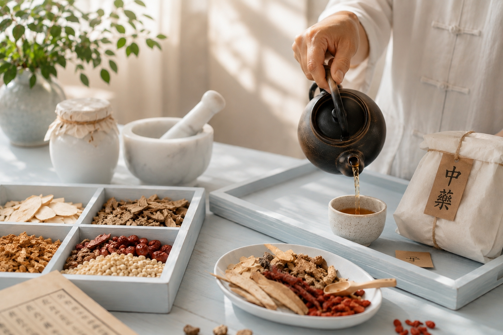

Clinical Case Library
These are stories of healing shared with our patients over more than 10 years. Each one reflects a meaningful journey, and these stories will continue to grow with every patient we have the privilege to care for.

임상 사례
10년이 넘는 시간 동안 환자분들과 함께 걸어온 회복의 이야기들입니다. 한 분 한 분과 함께한 소중한 시간, 그 시간에 대한 이야기는 앞으로도 계속될 것입니다.
Case Studies 사례 연구
Click any case to read the full detail. 각 사례를 클릭하면 전체 내용을 확인하실 수 있습니다.
A patient was experiencing daily bleeding and persistent pain due to atrophic vaginitis. These symptoms were significantly affecting her daily life and quality of life. She received herbal medicine treatment tailored to her individual constitution and symptoms for about two months. After completing treatment, she reported that the pain had completely resolved and that the frequency and volume of bleeding had markedly decreased. As a result, her daily comfort and overall quality of life improved considerably.
위축성 질염으로 인해 매일 하혈과 지속적인 통증을 겪고 있던 환자분이 있었습니다. 이러한 증상은 환자분의 일상생활과 삶의 질에 큰 영향을 미치고 있었습니다. 환자분은 약 두 달 동안 개인의 체질과 증상에 맞춘 한약 치료를 받았습니다. 치료를 마친 후, 환자분은 통증이 완전히 사라졌으며, 하혈의 빈도와 양이 현저하게 감소했다고 보고하였습니다. 이에 따라 일상생활의 편안함과 전반적인 삶의 질이 크게 향상되었습니다.
A patient undergoing chemotherapy for recurrent breast cancer was struggling to carry out daily activities due to severe fatigue and a marked loss of energy. Alongside her conventional cancer treatment, she received adjunctive care consisting of acupuncture twice a week for four weeks, together with herbal medicine tailored to her individual constitution and symptoms. After completing treatment, she reported that her energy had recovered significantly and that she no longer experienced the severe fatigue that had previously interfered with her daily life. As a result, she was able to continue her daily activities with greater comfort and confidence.
재발성 유방암으로 항암치료를 받고 있던 한 환자분은 극심한 피로와 현저한 기력 저하로 인해 일상생활을 수행하기 어려운 상태였습니다. 환자분은 기존의 항암치료와 함께 보조적 치료로 4주 동안 주 2회 침 치료와 개인의 체질 및 증상에 맞춘 한약 치료를 받았습니다. 치료를 마친 후, 환자분은 기력이 크게 회복되었으며, 이전에 일상생활을 방해하던 심한 피로감을 더 이상 느끼지 않았다고 말씀하셨습니다. 그 결과 보다 편안하고 자신감 있게 일상생활을 이어갈 수 있었습니다.
A patient presented with upper back pain arising from asymmetrical alignment of the shoulder blades. The patient received acupuncture twice a week for four weeks. After completing treatment, the upper back pain had completely resolved and the alignment of the shoulder blades had noticeably improved. As a result, shoulder balance was restored and overall posture improved.
견갑골의 비대칭 정렬로 인해 상부 등 통증을 호소하며 내원한 환자분이 있었습니다. 환자분은 4주 동안 주 2회 침 치료를 받았습니다. 치료를 마친 후, 상부 등 통증은 완전히 사라졌으며, 견갑골의 정렬 또한 눈에 띄게 개선되었습니다. 그 결과 어깨의 균형이 회복되고 전반적인 자세가 향상되었습니다.
A patient with Parkinson’s disease was experiencing severe drooling and intermittent hand tremors, and received acupuncture together with herbal medicine tailored to their individual constitution and symptoms. After treatment, the drooling no longer occurred, and the frequency and severity of the hand tremors decreased markedly. As a result, the patient’s daily life became more comfortable and their overall quality of life improved considerably.
파킨슨병으로 인해 심한 침 흘림과 간헐적인 손 떨림 증상을 겪고 있던 환자분이 침 치료와 개인의 체질 및 증상에 맞춘 한약 치료를 받았습니다. 치료 후 침 흘림 증상은 더 이상 나타나지 않았으며, 손 떨림의 빈도와 정도도 현저하게 감소하였습니다. 그 결과 환자분의 일상생활이 보다 편안해졌고, 전반적인 삶의 질이 크게 향상되었습니다.
A patient with multiple sclerosis (MS) was experiencing frequent, severe and recurrent leg cramps that significantly disrupted daily life. To relieve the symptoms, the patient had been taking high doses of magnesium on an ongoing basis. The patient received acupuncture combined with herbal medicine tailored to their individual constitution and symptoms for about two months. Over the course of treatment, the frequency and intensity of the leg cramps gradually decreased, and by the end of treatment the symptoms had resolved. As a result, the patient no longer needed to take high-dose magnesium to manage the symptoms.
다발성 경화증(Multiple Sclerosis, MS)을 앓고 있던 한 환자분은 다리에 반복적이고 심한 쥐가 자주 발생하여 일상생활에 큰 불편을 겪고 있었습니다. 증상을 완화하기 위해 고용량의 마그네슘을 지속적으로 복용하고 있었습니다. 환자분은 약 두 달 동안 침 치료와 개인의 체질 및 증상에 맞춘 한약 치료를 병행하였습니다. 치료 기간 동안 다리 경련의 빈도와 강도는 점차 감소하였으며, 치료를 마칠 무렵에는 증상이 소실되었습니다. 그 결과 환자분은 더 이상 증상 관리를 위해 고용량의 마그네슘을 복용할 필요가 없게 되었습니다.
A patient diagnosed with stage 3 bladder cancer was unable to sleep for a week due to severe lower abdominal pain, and had lost around 7 kg as a result of a significant decrease in appetite. The patient received acupuncture three times a week together with herbal medicine tailored to their individual constitution and symptoms. Before prescribing, all herbal ingredients were reviewed and approved by the treating specialist to confirm their compatibility with the scheduled chemotherapy. After about three weeks the lower abdominal pain had largely subsided, and by five weeks it had completely resolved, allowing the patient to undergo chemotherapy without any difficulty. After completing all chemotherapy, the patient was informed that test results showed no remaining trace of cancer.
제3기 방광암 진단을 받은 한 환자분은 심한 하복부 통증으로 인해 일주일 동안 잠을 이루지 못했으며, 식욕이 크게 감소하여 약 7kg의 체중이 감소하였습니다. 환자분은 주 3회의 침 치료와 함께 개인의 체질 및 증상에 맞춘 한약 치료를 병행하였습니다. 한약 처방에 앞서 모든 한약 성분은 담당 전문의의 검토와 승인을 받아 예정된 항암치료와의 적합성을 확인한 후 처방되었습니다. 약 3주 후에는 하복부 통증이 거의 사라졌으며, 5주 후에는 통증이 완전히 소실되어 항암치료를 받는 데 아무런 어려움이 없었습니다. 항암치료를 모두 마친 후, 환자분은 검사 결과 암의 흔적이 더 이상 발견되지 않았다는 진단을 받았습니다.
A patient experiencing recurrent fainting episodes due to atrial fibrillation was facing considerable difficulty in daily life. As part of an overall treatment plan, the patient received acupuncture once a week for twelve weeks. After completing treatment, the patient reported that the fainting episodes no longer occurred, and that their general condition and ability to carry out daily activities had noticeably improved.
심방세동(Atrial Fibrillation)으로 인해 반복적인 실신 증상을 겪고 있던 한 환자분은 일상생활에 큰 어려움을 겪고 있었습니다. 환자분은 전반적인 치료 계획의 일환으로 12주 동안 주 1회 침 치료를 받았습니다. 치료를 마친 후, 환자분은 더 이상 실신 증상이 나타나지 않았으며, 전반적인 컨디션과 일상생활 수행 능력이 눈에 띄게 향상되었다고 보고하였습니다.
Interested in TCM care? We'd love to speak with you. 한의학 치료에 관심이 있으신가요? 언제든지 연락 주세요.
Contact Us문의하기